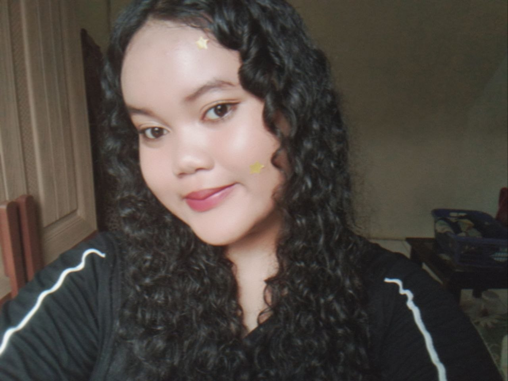

DAFTAR RIWAYAT HIDUP
Profil Pribadi
- Nama Lengkap: Salwa Shamira Rahman
- NISN: 3112341615
- Tempat,Tanggal Lahir: Depok, 06 September 2011
- Hobi: Bermain Sudoku dan Catur
- Alamat: Cimpaeun
- No Telepon:+62-838-0619-6733
Riwayat Pendidikan
- TK Khoirunissa (2015 - 2017)
- MI Nurul Iman (2017 - 2023)
- SMP Islam Al Anshor (2023 - 2026)
- SMK Negeri 1 Depok (2026 - 2029)
- Jurusan: Pengembangan Perangkat Lunak dan Gim
Skill
- Bahasa Pemrograman
- Bahasa Inggris dasar
- Komunikasi dan Deadline cepat
- Logis bermain Catur dan Sudoku
Motto Hidup
"Carpe Diem - Manfaatkan dan berikan yang terbaik hari ini. Jangan menunda apa yang bisa dilakukan sekarang untuk masa depan."